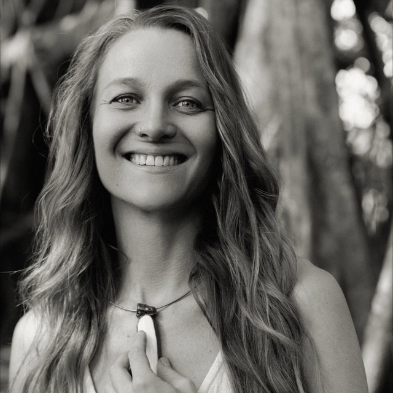
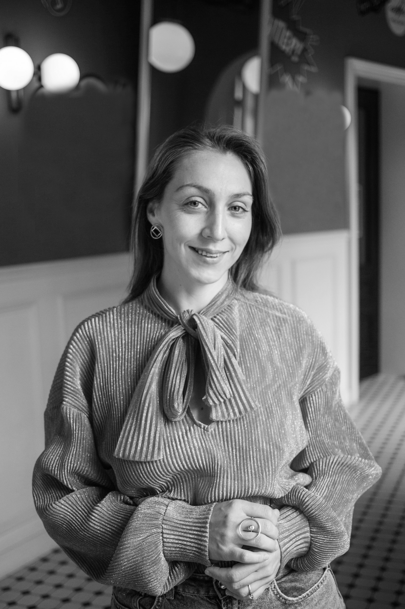

Алла
Доула смерти, фасилитатор, преподавательница и исследовательница жизни.
Алла
Доула смерти, фасилитатор, преподавательница и исследовательница жизни.

Саша
Доула смерти, смерть-просветительница, performance artist и писательница.

Настя
Магистр психологии, АСТ-терапевт, доула смерти, супервизор доул и психологов, писательница, эмигрантка, соло-мама.